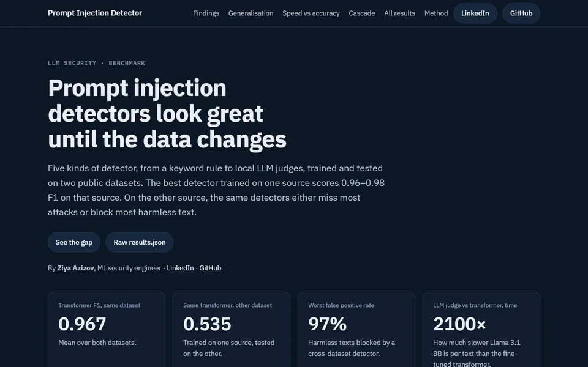
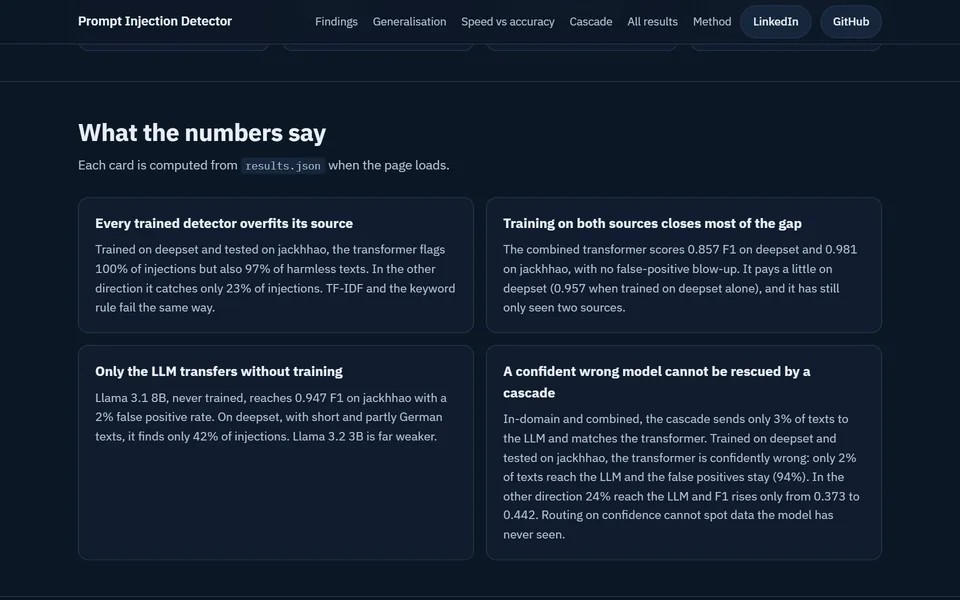
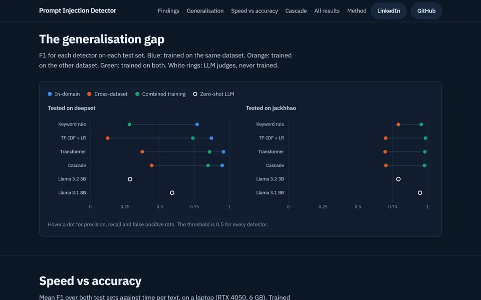

Prompt Injection Detector BenchmarkPrompt Injection Detector BenchmarkPrompt Injection Detector Benchmark
Prompt injection detektorlarının həqiqətən nə qədər etibarlı olduğunu ölçən tədqiqat. Beş növ detektor iki açıq datasetdə öyrədilib və bir-birinin datasetində yoxlanılıb.
A study of how reliable prompt injection detectors really are. Five kinds of detector were trained on two public datasets and tested on each other's data.
Исследование того, насколько надёжны детекторы prompt injection на самом деле. Пять видов детекторов обучены на двух открытых датасетах и проверены на данных друг друга.



Bir çox şirkət AI chatbotunu qorumaq üçün "zərərli mətni tanıyan" detektorlardan istifadə edir. Bu tədqiqat həmin detektorların data dəyişəndə nə qədər etibarlı qaldığını yoxlayır.
Beş növ detektor sınanıb: açar söz qaydası, TF-IDF + logistik reqressiya, fine-tune olunmuş çoxdilli DistilBERT transformer, kaskad sistem və lokal Llama 3.2 3B və Llama 3.1 8B modelləri (LLM hakim). Hamısı iki açıq datasetdə (deepset və jackhhao) öyrədilib və bir-birinin datasetində test olunub.
Nəticə: eyni datasetdə 0.96–0.98 F1 göstərən detektor digər datasetdə ya hücumların çoxunu buraxır, ya da zərərsiz mətnlərin 97%-ni bloklayır. Sayt bütün nəticələri interaktiv qrafiklər, sürət-dəqiqlik müqayisəsi və tam cədvəllə göstərir.
Many companies protect their AI chatbots with detectors that try to recognise malicious text. This study checks how reliable those detectors stay when the data changes.
Five kinds of detector were tested: a keyword rule, TF-IDF + logistic regression, a fine-tuned multilingual DistilBERT transformer, a cascade, and local Llama 3.2 3B and Llama 3.1 8B models as LLM judges. All were trained on two public datasets (deepset and jackhhao) and tested on each other's data.
The result: a detector that scores 0.96–0.98 F1 on its own dataset either misses most attacks on the other one or blocks up to 97% of harmless text. The site shows every result with interactive charts, a speed-vs-accuracy plot and the full table.
Многие компании защищают своих AI-чат-ботов детекторами, которые пытаются распознать вредоносный текст. Это исследование проверяет, насколько надёжны такие детекторы, когда данные меняются.
Проверено пять видов детекторов: правило по ключевым словам, TF-IDF + логистическая регрессия, дообученный многоязычный трансформер DistilBERT, каскад и локальные модели Llama 3.2 3B и Llama 3.1 8B в роли LLM-судей. Все обучены на двух открытых датасетах (deepset и jackhhao) и проверены на данных друг друга.
Результат: детектор, который получает 0.96–0.98 F1 на своём датасете, на другом либо пропускает большинство атак, либо блокирует до 97% безобидного текста. На сайте все результаты показаны в интерактивных графиках, включая график скорости и точности, и в полной таблице.
- İki datasetdə birgə öyrətmək boşluğun çoxunu bağlayır.
- Llama 3.1 8B heç öyrədilmədən jackhhao-da 0.947 F1 alır, amma transformerdən 2100 dəfə yavaşdır.
- Kaskad özündən əmin, amma səhv olan modeli xilas edə bilmir.
- Training on both datasets closes most of the gap.
- Llama 3.1 8B reaches 0.947 F1 on jackhhao with no training, but is 2,100× slower than the transformer.
- A cascade cannot rescue a model that is confidently wrong.
- Обучение на обоих датасетах закрывает большую часть разрыва.
- Llama 3.1 8B достигает 0.947 F1 на jackhhao без обучения, но в 2 100 раз медленнее трансформера.
- Каскад не спасает модель, которая уверенно ошибается.